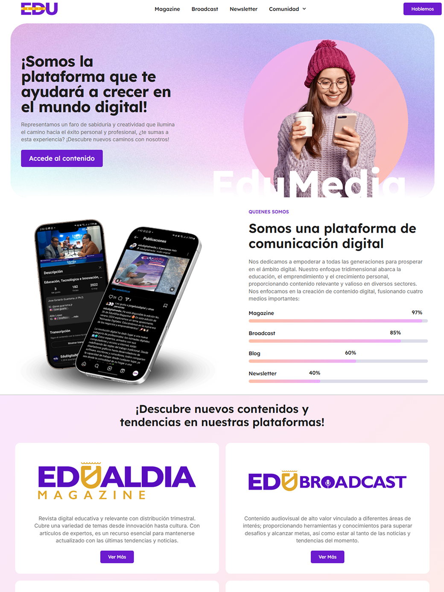
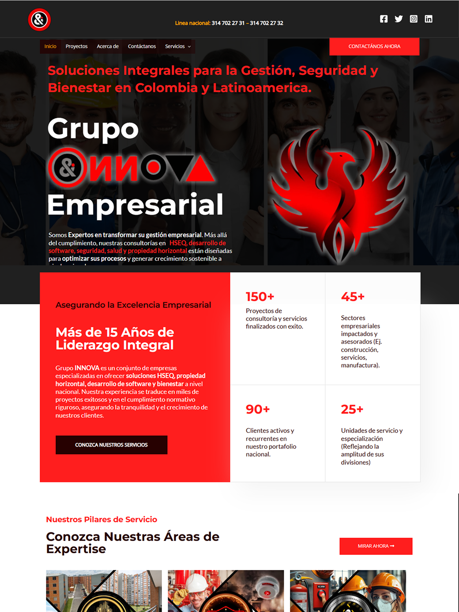
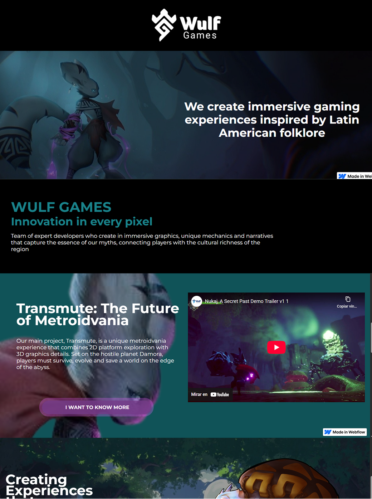
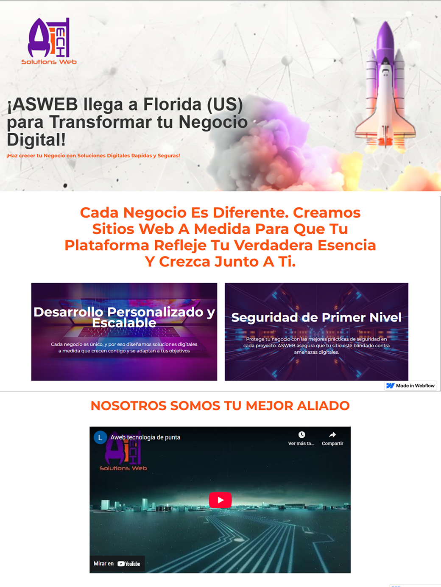

En esta sección presento proyectos desarrollados con herramientas no-code y low-code como WordPress y Webflow, enfocados en la creación de landing pages y sitios web funcionales para negocios e instituciones. Estos proyectos destacan mi capacidad para entregar soluciones digitales de forma eficiente, cuidando la estructura, el contenido y la experiencia de usuario.

Florida Global University – Landing Page Institucional
Diseño y desarrollo de una landing page institucional para Florida Global University, orientada a presentar programas académicos, información institucional y facilitar la captación de estudiantes potenciales mediante una estructura clara y accesible.
Apoye en el desarrollo y optimización de la landing page utilizando WordPress, estructurando el contenido, ajustando la experiencia de usuario y asegurando una correcta adaptación responsive. Trabajé en la organización visual y funcional del sitio para garantizar una navegación clara y eficiente.
WordPress, UX/UI, Diseño Web, Responsive Design
El proyecto reforzó mi experiencia en el desarrollo de sitios institucionales, destacando la importancia de la claridad del contenido, la estructura de la información y la correcta experiencia de usuario en entornos educativos.

Landing page corporativa (No-Code / Low-Code)
Desarrollo de una landing page corporativa para Grupo Innova, enfocada en presentar los servicios de la empresa de forma clara, profesional y orientada a generar contacto con potenciales clientes. El objetivo fue crear una presencia digital sólida y confiable.
Desarrollé la landing page utilizando WordPress, estructurando el contenido y organizando las secciones para comunicar de manera efectiva la propuesta de valor de la empresa. Apliqué principios básicos de UX/UI para mejorar la legibilidad, jerarquía visual y navegación del sitio.
WordPress, UX/UI, Diseño Web, Responsive Design
Este proyecto reforzó mi capacidad para construir sitios web orientados a negocio, priorizando la claridad del mensaje, la estructura del contenido y la experiencia del usuario final.

Landing page promocional (No-Code / Low-Code)
Desarrollo de una landing page promocional para Wolfgame, orientada a presentar el proyecto de forma visual y estructurada, facilitando la comunicación de su propuesta y características principales al usuario.
Este proyecto fortaleció mi experiencia en el uso de Webflow como herramienta low-code para la creación de landing pages visualmente sólidas y funcionales, manteniendo buenas prácticas de experiencia de usuario.
Webflow, UX/UI, Diseño Web, Responsive Design
Este proyecto fortaleció mi experiencia en el uso de Webflow como herramienta low-code para la creación de landing pages visualmente sólidas y funcionales, manteniendo buenas prácticas de experiencia de usuario.

Landing page corporativa (No-Code / Low-Code)
Desarrollo de una landing page para Asweb, orientada a presentar servicios digitales de forma clara y profesional. El objetivo fue construir una página sencilla, directa y enfocada en comunicar la propuesta de valor del negocio.
Desarrollé la landing page utilizando Webflow, organizando la estructura del contenido y cuidando la coherencia visual. Apliqué principios de UX/UI para asegurar una navegación clara, buena legibilidad y correcta adaptación responsive en distintos dispositivos.
Webflow, UX/UI, Diseño Web, Responsive Design
Este proyecto reforzó mi capacidad para entregar soluciones web rápidas y funcionales mediante herramientas low-code, manteniendo una experiencia de usuario clara y alineada con objetivos de negocio.